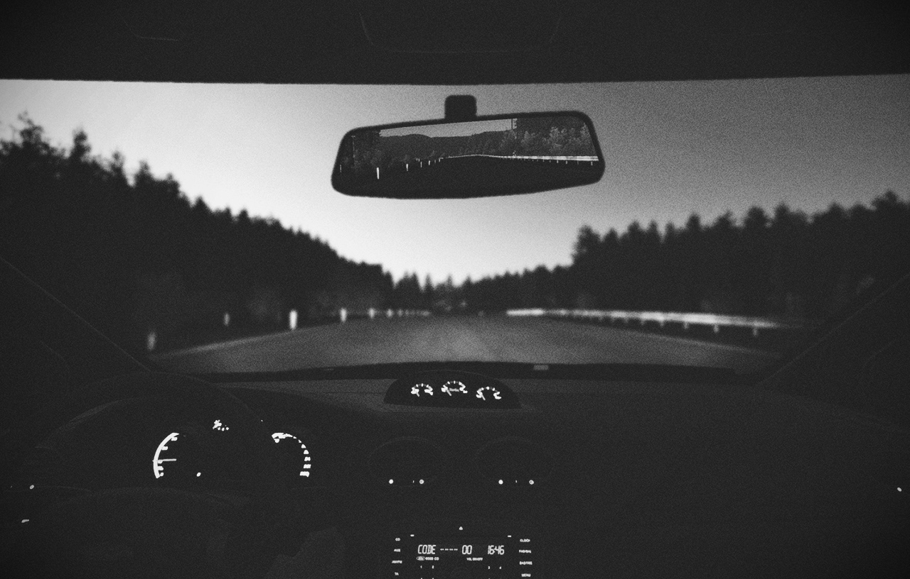
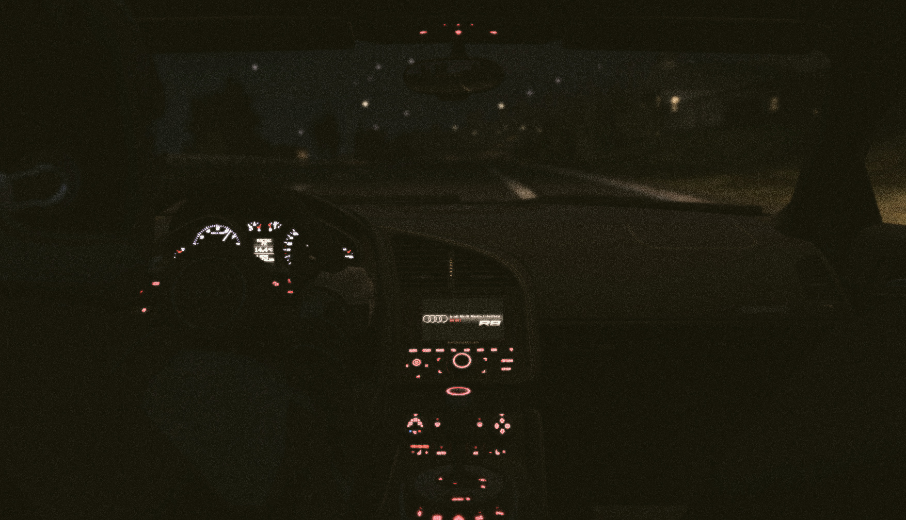
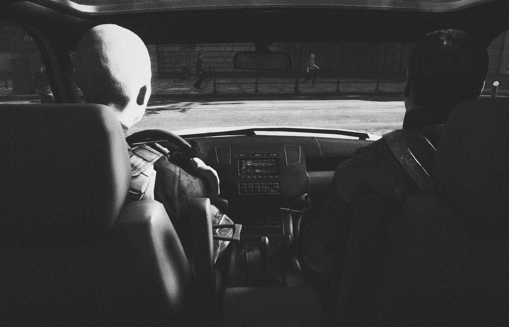
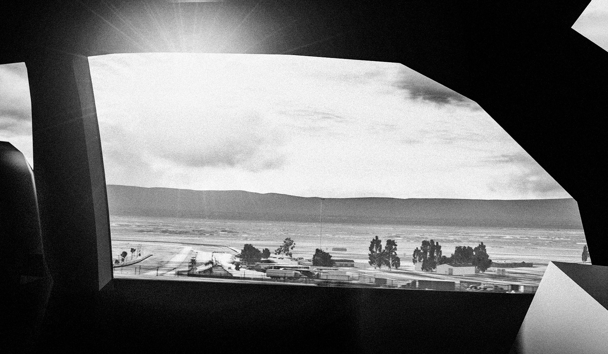
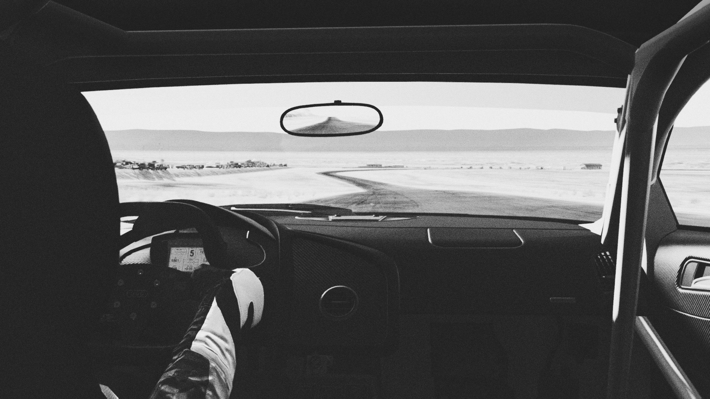
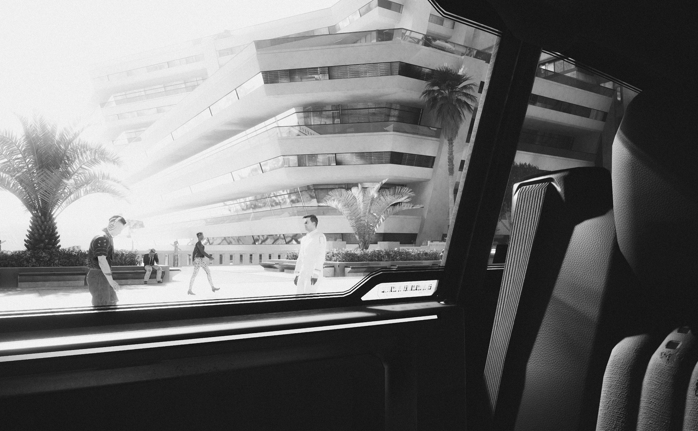
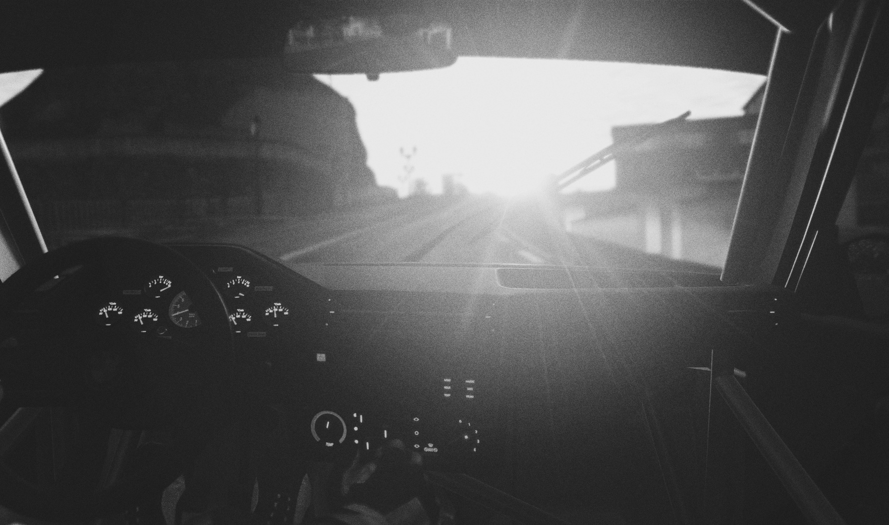
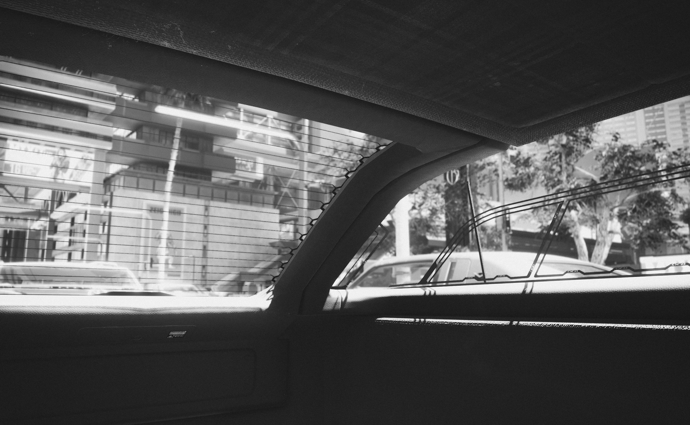
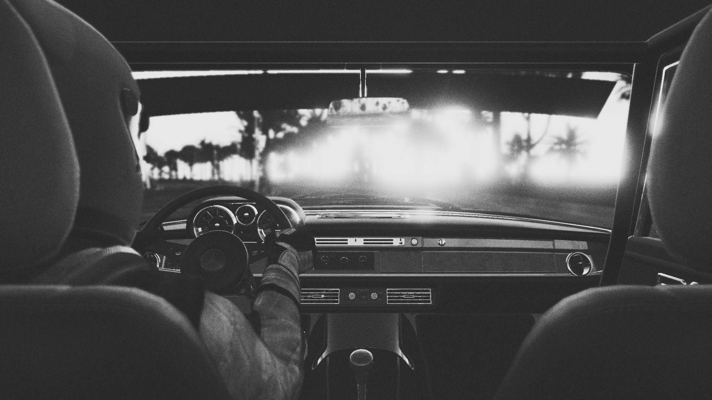
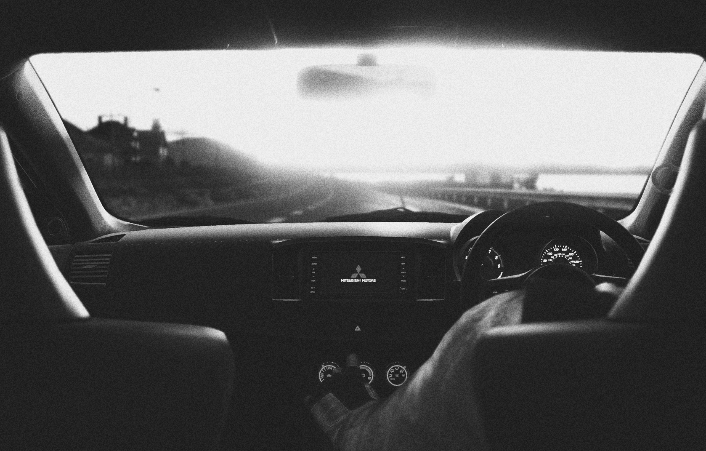

Leonardo Sang (1990) is a self-taught photographer living and working in São Paulo, Brazil. He holds a degree in industrial design from Mackenzie University (2012) and worked for 8 years as a graphic designer, at Estúdio Árvore, EC and Bossa Nova Films. He's also co-founder of Estúdio Arnold (2011), a strategic design studio based in São Paulo.
Sang has shown his work in multiple galleries in cities such as London, Los Angelos and Madrid. As part of his virtual photography project, the goal here is to explore how racing games don't have to be about "racing" and some of the games used aren't even in the racing genre. This is a reference to "road tripping" photography. Catching that lonesome roadtrip mood, where the journey inside the car is more emotional rather than arriving at the destination.